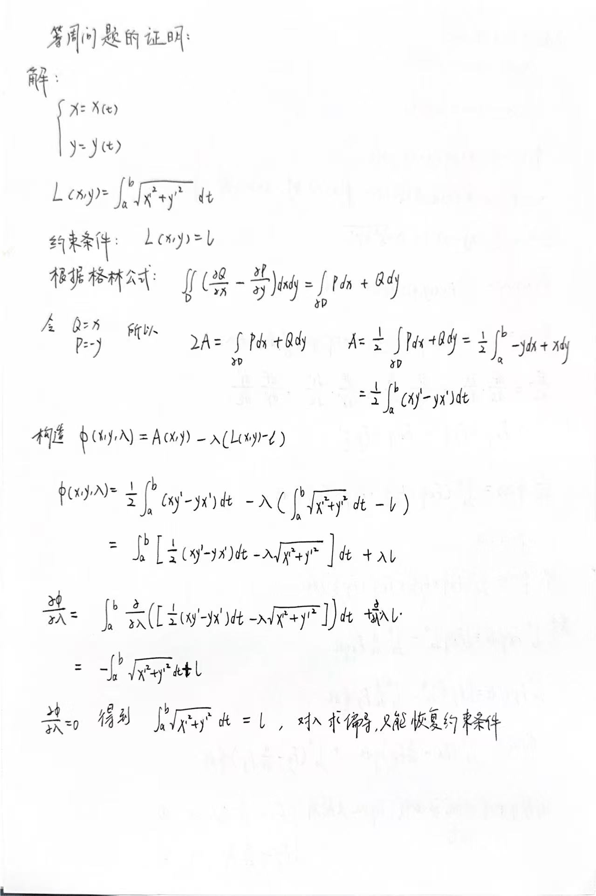
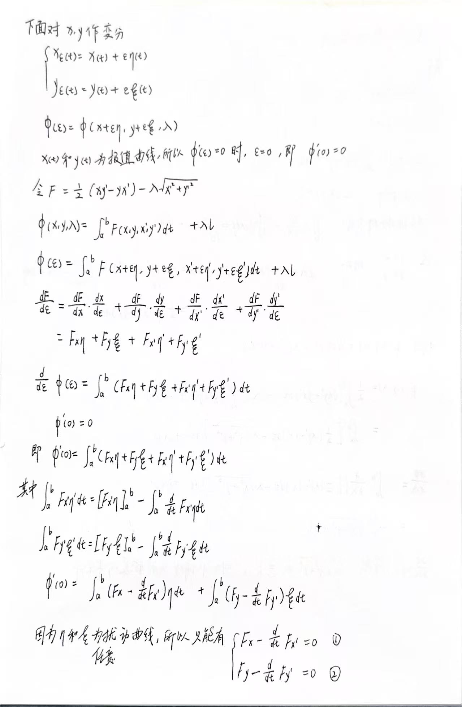
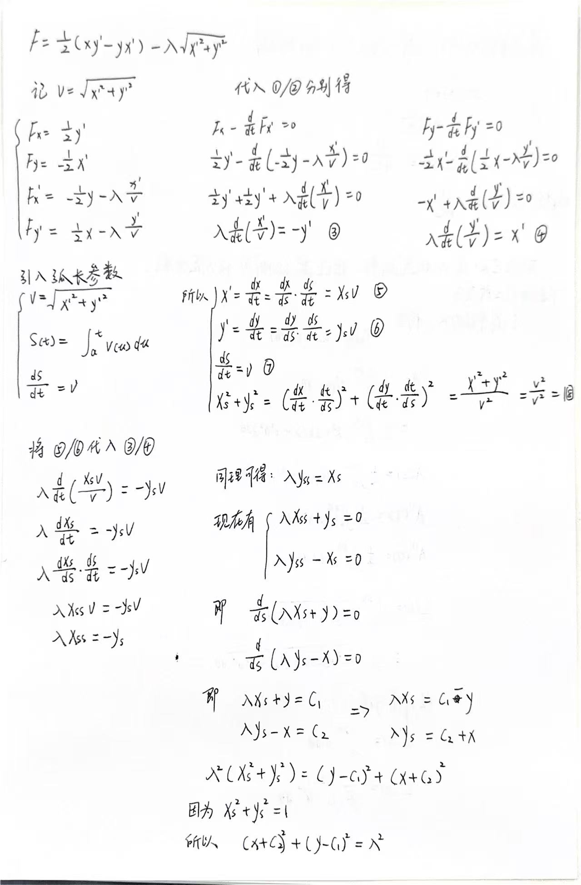
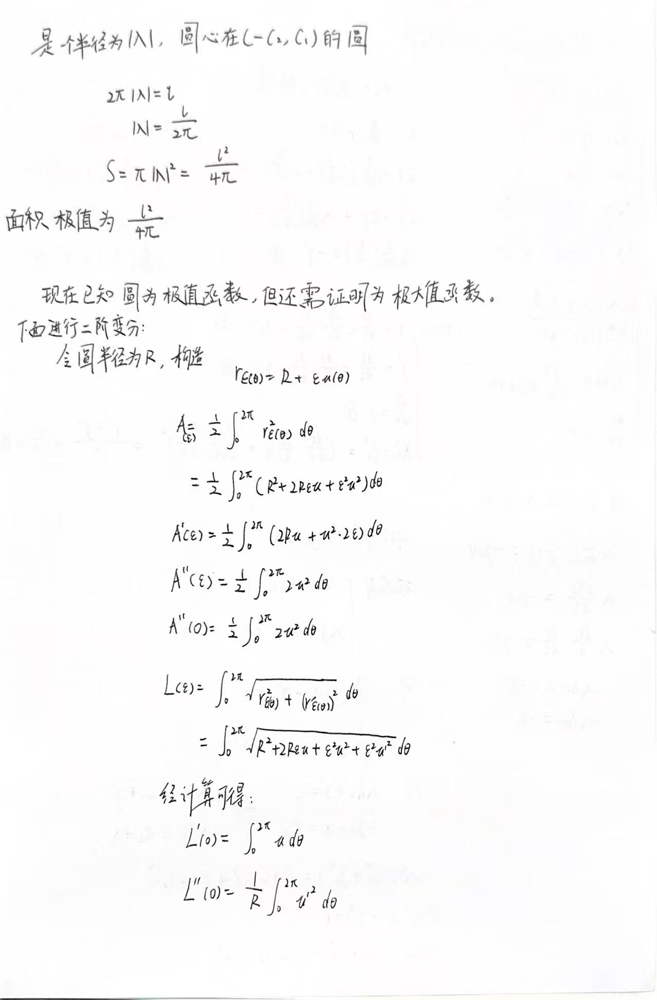
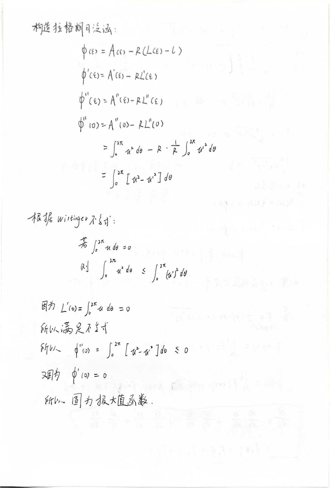

变分法解决等周问题
1 等周问题的背景
在古代地中海的传说中，迦太基王后黛多（Dido）从古泰尔国（Tyria）来到北非的地中海沿岸，开始建立自己的新城。当地一位酋长答应给她一块土地——条件是只能用一头牛的牛皮所能包围的范围。聪明的黛多没有浪费时间和牛皮，她把牛皮剪成极细的条，铺开成弯曲的围栏，利用北非海岸作为天然的边界，形成了一个半圆形的领地。
这个传奇其实隐藏着一个有趣的数学问题：在所有周长相同的封闭曲线中，哪种形状可以围出最大的面积？
在这个 blog 中我将使用变分法去解决这个问题。
2 应用变分法解决等周问题
在这个证明过程中使用到了：
1.格林公式
2.Wirtinger 不等式





3 等周不等式
4 等价的问题
平面上，在给定周长的所有闭曲线中，圆是具有最大面积的曲线。 反过来，所有围成的区域面积一定的闭曲线中，以圆的周长为最小。
5 讨论
在这个 blog 中，我用一阶变分求出了极值函数（圆），又尝试使用二阶变分去看是极大值和极小值，发现圆是极大值函数。其实关于二阶变分我的了解甚少，对于为什么
L’(0) = 0, 其实我是有点拿不准的，我目前的理解是，由于在这个约束优化问题上，我们固定的是周长，r(ε) = R + ε*u, 我们只是添加了一个线性的扰动，这个扰动不能够一定严格保证周长是不变的，如果要保证周长在扰动后严格不变，就需要添加高阶的修正。因为我的约束是 所有的周长的定积分是l 的函数组成的集合，L’(ε)在ε=0 的切线方向至少是沿着约束的切线方向的，如果是沿着约束的切线方向的话，那么一阶变化就是0，正好就满足了Wirtinger 不等式，也就能够判断二阶变分的符号了。